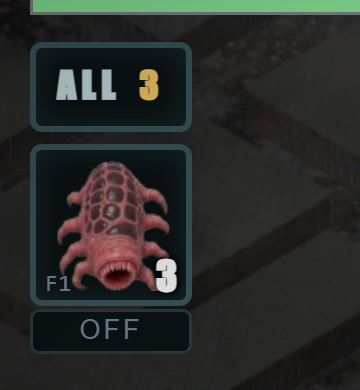
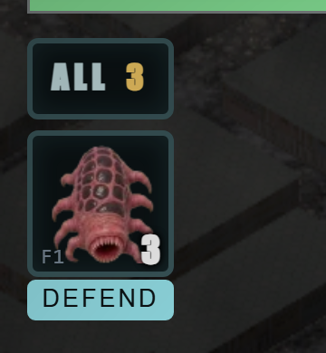
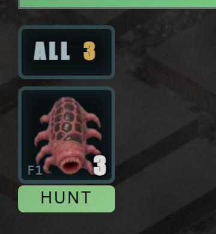
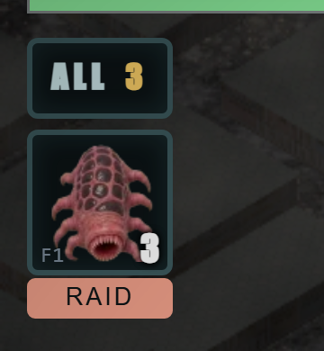

Unit stances: DEFEND, HUNT, RAID
Broodfall, November 23 2026. Your request: an AI that runs the little critters in a defensive or a hunter setting, where the hunter goes after science teams while staying in cover. Then a third setting that goes after where bases are being set up.
The four stances, as they look in the game

OFFThey do only what you tell them and guard their post.

DEFEND (warriors start here)They fight anything that comes into cover: science teams, engineers, shield domes, a field station, an outpost under attack. They never chase it out of cover; they come home.

HUNT (Harriers start here)Science teams only. They wait in cover at the spot nearest the closest team and strike as soon as it comes within reach. A Harrier shoots 170 px out from cover; warriors step out a little. A team that walks away is let go, and they wait again.

RAIDEngineers and field stations anywhere on the board, which is where the hive is setting up bases. They run them down, then come home.
Broodmothers start on OFF, so a mother you parked to brood stays parked until you change it.
They move as one squad, not a drip
Your follow-up question was whether they keep together. They do now. Everyone on the same setting is one squad with one target. Before, each unit went to whatever was closest to it.
- One target: the whole squad picks the same one (the one nearest the squad) and sticks to it while it is in reach.
- Form up first: if they are spread out, they gather on the unit nearest the target, then go. If the enemy is already on top of them they fight at once. After 12 seconds they go anyway, and any unit still far off goes home.
- Move together: on the way, a unit more than 70 px ahead of the group waits for the rest, unless it is already fighting.
- No stragglers walking in alone: a unit that is born or finishes healing while the squad is out waits at home and joins at the next forming-up.
Checked in the real game: six warriors on RAID went for a field station 273 px away. They stayed within 70 px of their own centre the whole way and arrived together. Works. Tests also cover forming up, the single shared target and the late unit waiting at home.
What changed for the Harrier
Before, a Harrier left alone chased science bodies anywhere on the map. That is now the HUNT stance, and it hunts from cover. A Harrier on DEFEND or OFF stays home.
Does it change how often you win?
The scripted player played 10 runs of the 12-wave Hold with every fighter on each setting:
| Setting | Wins | Verdict |
|---|---|---|
| Defaults (warriors DEFEND, Harriers HUNT), as squads | 6 / 10 | fine |
| Everyone DEFEND | 6 / 10 | fine |
| Everyone HUNT | 6 / 10 | fine |
| Everyone RAID | 6 / 10 | fine |
| Everyone OFF | 6 / 10 | fine |
Caveat: in these runs the scripted player grows at most one Harrier and a Brood Pit or two, so the stances change what the units kill but not the result. Moving as squads did raise what they kill: 58, 73 and 111 kills in the runs that built units, against 17, 0 and 29 when each went alone. This shows no stance breaks the game. It does not show which stance is best for someone who builds many units; that needs a person playing.
Also in this batch
The eat-a-limb pop-up now has a line about gorging: "A limb that eats grows: every meal makes it hit harder, faster and tougher, each meal more than the last. Keep feeding one limb and it becomes a monster."
Technical write-up for an engineer or an AI: the "STANCES" bullet in C:\Users\Merry\dev\space-derelict\games\broodfall\DESIGN.md.